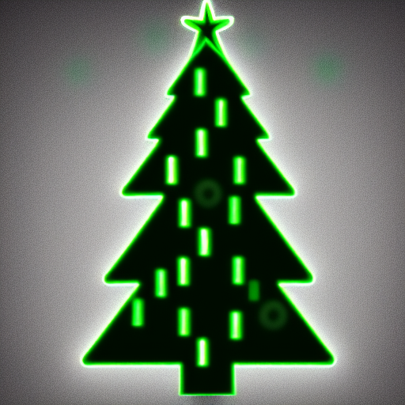
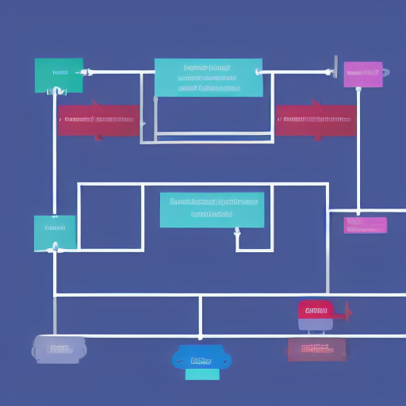
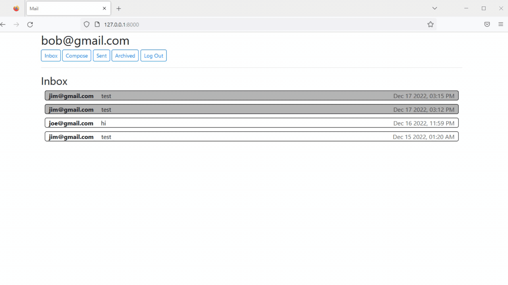

Biomedical Engineer turned Software Developer.
I have a passion for automation and efficiency.

I built a Twitter clone using Django, SQLite and Javascript.
Using models for Users, Tweets, and Follows, I enabled following other users, viewing your follow-feed, and liking and unliking tweets.
I used Javascript to handle likes and unlikes, and follows and unfollows so the page doesn't need reloading for every action. I also retrieved the browser cookie via Javascript to enable secure updates.
The site is mobile responsive using flex-boxes to maintain appearance and functionality on smaller screens

This is an e-commerce web app that uses Django and SQLite3 to run auctions.
The database has models for Users, active listings, bids, and comments. Active listings track the item, current price, and auction expiration date. Bids and comments use the listing object as a foregin key.
The active listings page displayed the item's title, decription, comments (recent first), current highest bid, and status of the auction. If the user created the listing, they can 'close' the auction which disables bidding. If the user has won the item, the page tells them.
Users can also add and remove items from their watchlist. They can also visit a categories page to view active listings by category.

I built a single-page email client using Javascript.
Javascript detects clicks on the nav bar and hides or shows the desired content.
Composing a new email begins with a blank email canvas while replying to an existing email is pre-populated with the recipient and subject.
Composed emails are then sent to the server via post request
Received emails are fetched from the server and procedurally added to the display. Each email is created as its own elemented and appended to the view. Depending on the viewed or unviewed status of the email, the background is white or gray.
Users can also archive and unarchive emails, also achieved via post requests.
My solutions for the first 14 days of Advent of Code 2022.
My favorite problem was a shortest-path question with an additional constraint. Given a 2D matrix of elevations, an elf was walking to the top of a series of hills, but could only go up one unit of height at a time.
I solved it with a BFS solution. Using a queue, I added new locations only if they were an eligible height difference, and tracked their current distance with a tuple ((x,y), distance+1). Eligible tiles added had a distance + 1 of their predecessor.
OpenAI released "Whisper" an open-source speech recognition model. It recognizes speech in a given mp3 file. However, it doesn't function in real time, until now. I achieved "real" time speech recognition using Whisper, python, and multiprocessing.
One process uses the microphone to continuously record 5 second audio segments. Then, once a new segment is saved, the transcription process begins, which then recognizes any speech in the audio clip. The transcription process takes roughly 2 seconds so its always ready to transcribe the next incoming audio file.
Once I had real-time speech recognition, I used it to create a voice-to-voice chatbot. The chatbot uses open source language models and functions by receiving the transcribed words and then rendering its response.
I also created a question-answering bot by monitoring the transcribed text for questions and using another open-source language model to search a corpus of documents for the answer to the question. It worked well for technical, fact questions but was less successful for synthesis or summarization questions.
This is a flashcard app, inspired by Anki and Dr. Andrew Huberman, created using Tkinter.
During a study session, random short rest intervals boost learning speed. The neurons activated while studying actually fire faster during this rest interval resulting in stronger memory formation. Additionally, an adrenaline spike signals the brain to remember the events directly before the adrenalien jump. Like when people experience a traumatic event can vividly remember many details. We can take advantage of these biological mechanisms to study more effectively! My favorite memorization tool is Anki, unfortunately it lacked any features to capitalize on these two mechanisms, so I built my own from scratch using Tkinter.
Key Features:
Features:
Anki decks can be exported as a tab deliminated text file. Converter.py converts this file to CSV format.